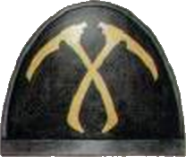

Scythes of the Emperor
| Scythes of the Emperor | |
|---|---|
 Heraldry of the Scythes of the Emperor Artwork © Games Workshop | |
| Founding | Third Founding (001.M32 by the Chapter's own records)[a] |
| Progenitor | Ultramarines (Roboute Guilliman) |
| Homeworld | Sotha (destroyed by Hive Fleet Kraken, 992.M41) |
| Fortress-monastery | Aegida star fort in orbit of Sotha; formerly the battle barge Heart of Cronus |
| Chapter Master | Unknown (Thrasius, killed in the Era Indomitus; Oberdeii, first Master) |
| Allegiance | Imperium of Mankind; a Shield Chapter of Ultramar |
| Colours | Black and yellow |
| Notable battles | |
| Battle of Sotha (c. 010.M31), Corinth Crusade (698–705.M41), Damocles Gulf Crusade (742–745.M41), Verdeworlds (865.M41), Fall of Sotha (992.M41), Aberrus System (M42) | |
The Scythes of the Emperor, also called the Emperor's Scythes, are a loyal Space Marine Chapter of the Adeptus Astartes and a successor of the Ultramarines. They follow the Codex Astartes and are counted among the nine Shield Chapters that help the Ultramarines defend and extend the Realm of Ultramar. The Chapter grew from the garrison that Roboute Guilliman left on the restricted world of Sotha to guard a xenos beacon known as the Pharos.[1]
In 992.M41 the Chapter lost Sotha to Hive Fleet Kraken and was reduced to roughly two companies, many of whom carried the taint of the Genestealer's Kiss. It was restored during the Indomitus Crusade with Primaris Space Marines and now keeps its old watch from the rebuilt star fort Aegida.[2]
History
[edit]The Aegida Company
[edit]Sotha was classed a restricted world because of the Pharos, a pre-Imperial biotechnological device buried in Mount Pharos, which used the psychic energy of empathy to aid navigation through the Warp in the manner of a much smaller Astronomican. During the Imperium Secundus Guilliman used it as a beacon to call scattered loyalists to Macragge. The Ultramarines' 199th "Aegida" Company was left to hold the mountain, and its warriors took crossed scythes as their badge, after the farmers of the world and the ritual clearing of the ground about the site.[1]
At the Battle of Sotha, c. 010.M31,[b] a fleet of the Night Lords under Captain Krukesh the Pale tried to seize the Pharos. The Iron Warriors Warsmith Barabas Dantioch overloaded the device and died doing so, which disabled the Night Lords above the world. The Scout Oberdeii led his squad in the defence and was promoted sergeant by Guilliman himself.[1]
Founding
[edit]After the Second Founding in 021.M31 the Aegida was kept as a phantom eleventh company against the Codex. When the Third Founding began, Oberdeii was its last survivor, now Warden of the Pharos under an Aegidan Oath sworn on the primarch's blade. To remove an embarrassment to the Chapter of Macragge, the Ultramarines Chapter Master Tigris Decon sent the Chaplain Segas to offer him a choice: serve in the Fifth Company, or command a new Chapter. He chose the Chapter and named it for the scythes. Segas, Brother Wenlocke and seventy-two veterans of the Orlan Conquest were assigned to him. A fortress-monastery rose on Sotha in 001.M32.[1]
Crusades and the fall of Sotha
[edit]From Sotha, near the Damocles Gulf, the Scythes policed nearby mines and manufactories and later turned on Ork migrations. In the Damocles Gulf Crusade they led the first landing on the T'au world of Sy'l'kell in 742.M41 and fought at Dal'yth Prime with the Ultramarines and Iron Hands. They also served in the Corinth Crusade under Marneus Calgar and, in 912.M41, were set by the Inquisition to watch the penitent Lamenters, with whom they formed a lasting alliance.[1]
In 992.M41 a Genestealer cult on Sotha drew Hive Fleet Kraken to the world. Chapter Master Thorcyra held the fortress long enough for the population to flee, then broke out with some two hundred battle-brothers and regrouped in the Miral System. Sotha was stripped to an asteroid. Many survivors bore the Kiss and wore psychic dampening hoods against the Broodmind.[1]
Era Indomitus
[edit]Guilliman named the Scythes a Shield Chapter of Ultramar and ordered Primaris reinforcement. Within a few years the surviving Firstborn were reduced to a few veterans and officers. They went with Belisarius Cawl to Sotha to study the Pharos, where a cult that had infiltrated the Chapter's serfs attacked them. Chapter Master Thrasius died fighting the Patriarch that had first brought Kraken, and every remaining Firstborn fell with him. Aegida was rebuilt as the fortress-monastery. In M42 a Scythes force fought in the Aberrus System beside the Iron Lords, the Knights of the Raven and the Lamenters.[2]
Organisation and beliefs
[edit]The Chapter keeps the standard ten companies of the Codex. Its war cries include "For the ghosts of Sotha!" and, against Tyranids only, "For the Emperor and for Sotha!". Since Kraken its members have been secretive and watchful for genetic corruption.[1]
Notable campaigns
[edit]- Verdeworlds (865.M41): with the Black Templars and Blood Angels, cleansed the Verdeworlds of Aeldari settlers.
- Sy'l'kell and Gel'Bryn (742–745.M41): broke a T'au counter-assault and fought for the city of Gel'Bryn until the crusade withdrew before Hive Fleet Behemoth.
- Corinth Crusade (698–705.M41): drove the Ork warlord Skargor back to Corinth.
Notable members
[edit]- Oberdeii: first Chapter Master, Warden of the Pharos.
- Thorcyra: Chapter Master who led the defence of Sotha in 992.M41.
- Thrasius: Chapter Master killed on Sotha in the Era Indomitus.
Timeline
[edit]| Date | Event |
|---|---|
| c. 010.M31 | Battle of Sotha; the Aegida Company holds the Pharos |
| 021.M31 | Second Founding; the Aegida kept as a phantom eleventh company |
| 001.M32 | Scythes of the Emperor raised under Oberdeii |
| 698–705.M41 | Corinth Crusade |
| 742–745.M41 | Damocles Gulf Crusade; landing on Sy'l'kell |
| 865.M41 | Verdeworlds campaign |
| 912.M41 | Set to watch the penitent Lamenters |
| 992.M41 | Fall of Sotha to Hive Fleet Kraken |
| 999.M41 | Great Rift opens; Primaris reinforcements arrive |
| M42 | Thrasius dies on Sotha; Aberrus System campaign |
See also
[edit]Notes
[edit]- ^ The Register of Foundings places the Third Founding in the 31st millennium; the Chapter dates its own raising to the first year of the 32nd.
- ^ Dated from the sequence of events in the Imperium Secundus; no record gives the year.
References
[edit]- ^ a b c d e f g Codex: Space Marines (9th Edition), pp. 24-25, 47. Games Workshop. Hayley, Guy. Belisarius Cawl: The Great Work (novel). Black Library, Chs. 2, 8, 9, 17, 23-24, 26-27.
- ^ a b Goulding, Laurie. Slaughter at Giant's Coffin (novel). Black Library, Chs. 1-4, 7-8 "The Sothan Horseman" (Interstitial within Ch. 8), 12. Codex Adeptus Astartes - Grey Knights (8th Edition), "Putrid Springs," pg. 25. Games Workshop.